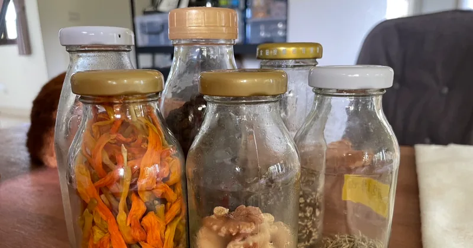
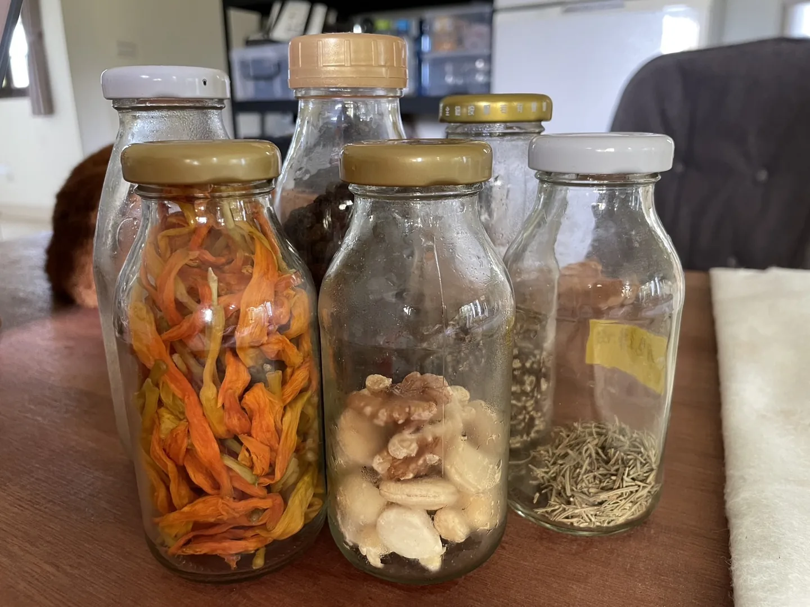

檸檬汁與玻璃罐，生活與環保

迎來了真的會把人烤焦的夏天。
最近食慾不振，也沒什麼做菜的動力，於是餐餐吃清燙的涼菜，甚至也沒有調味。兩週前邀請友人到家裡吃飯，彼時買的兩顆檸檬還躺在冰箱，配著也是買了沒使用的蘇打水，久違做了檸檬汁／檸檬汽水。
高三的時候，不知哪來的靈感，幾乎天天帶檸檬汁到學校。用Tree top的玻璃罐，半顆檸檬、一些糖、蜂蜜和鹽巴，再放入檸檬切片（當時就懂得什麼叫儀式感），就大功告成。（回頭看來，這個檸檬汁似乎太濃了……）
其實畢業之後，我再也沒有這麼長時間地頻繁喝檸檬汁。高中朋友說我喜歡檸檬汁，我也覺得我是，但或許我更喜歡玻璃罐。就像喜歡酸，我就以為我有的是Ｍ屬性，近年才發現自己是妥妥的S。咳，離題了。
總之，反倒是上了大學之後，我一直以玻璃瓶當水壺，10多年前環保意識還不強烈，玻璃製的水壺選擇並不多（梅森瓶還沒開始流行），也在那時接觸到矽膠這個材質，做了不少功課。特別買的玻璃水瓶壽命大約1-2年，最後都死於偷懶放在地上、不小心踢到。還記得友人安慰：「玻璃水壺可以用這麼久，你一定是一個細心的人。」
再後來，也有段時間改用其他不鏽鋼、矽膠產品，隨著出社會、生活型態的改變，發現哪裡都有飲水機，此外也開始追求隨身攜帶物品的輕量化，於是容器也越用越小，最後是摩斯漢堡的牛奶罐開啟我的新世界，重回玻璃罐懷抱。（真的很推薦這個尺寸！）
以前用Tree top裝檸檬汁時，倒置時會慢慢地有水滴漏出來，所以在包包裡必須有專屬的水杯位置（有些包包會有這個設計，讓他不會傾倒）；金屬蓋用久了會生鏽，就口處會開始留下鏽痕，使用一段時間就必須淘汰換新。然而摩斯牛奶的玻璃罐是搭配塑膠蓋，大大降低了在包包裡翻倒漏水的焦慮，而且200ml的容量對我而言也很適中。（treetop是300ml）
不曉得是不是後來製作技術有提升，台農保久乳／無印良品豆奶跟treetop同樣是金屬上蓋，但已經完全不會漏水，容量同樣是200ml，自從摩斯牛奶罐被我裝滿液體冰冷凍、結果弄碎之後，就一直是改用台農保久乳／無印良品豆奶罐，直到現在應該也是超過兩三年。另外超商常見的Dr.milker極鮮乳也是不錯的選擇，上蓋是塑膠、很密封、容量大一些（250ml）。我個人是比較喜歡200ml玻璃罐的圓潤身形。

這些消費裡默默產生的多餘的玻璃罐，也都保留了下來，用來盛裝從雜糧行、無包裝商店買的乾貨、堅果們，很萬用的尺寸、又密封，覺得窄高的罐型比起寬矮的醬瓜罐，又更適合收納。真的要段捨離、搬家時，回收、贈與無包裝商店客人再利用，也比較不會有處理的心理負擔。
不多花錢、花時間研究各種商品，符合日常需求也不勉強自己，剛剛好夠用的容量，剛剛好的環保。
btw，我有一個125ml玻璃罐，有次跟友人出遊、一起到茶水間裝水，友人說：「看你用那麼小的罐子喝水，彷彿水都高級了起來。」
留言
電子郵件不會公開，只用來辨識留言者。第一次留言會先經過審核，之後同一個電子郵件的留言會直接顯示。本留言區以 Cloudflare Turnstile 防止垃圾留言。